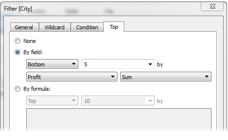
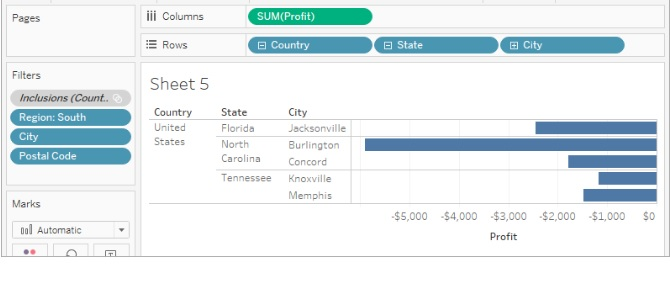

Etapas
EtapasEtapa5:
Criar um filtro de N principais
Você pode usar um filtro de N principais no Tableau Desktop para definir um limite para o número de marcas exibida em sua exibição.
Tableau Desktop já selecionou um campo (Lucro) e uma agregação (Soma) para o filtro de N principais, com base nos campos em sua exibição. Essas configurações asseguram que sua apresentação aparecerá as cinco cidades com o pior desempenho pela soma do lucro.
Você agora consegue ver algumas cidade que têm o pior desempenho em relação ao lucro.
A ordem de operações do Tableau, também conhecida como pipeline de consulta, é a ordem em que o Tableau realiza várias ações.
A boa notícia é que você pode dizer ao Tableau para alterar essa ordem quando observar algo estranho acontecendo com os filtros na sua exibição. Tudo o que precisa fazer é adicionar um filtro ao contexto. Isso dirá ao Tableau para filtrar esse campo primeiro, independentemente de onde ele estiver na ordem de operações.
